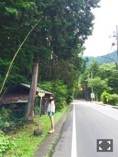
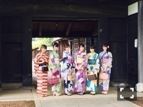

| 2016/07 24 Sun | ひめたん-0o0-その656 |
全国ツアー大阪3公演
無事終了いたしました！
来てくださった皆さん
ありがとうございました
楽しんでいただけましたか？
15thシングルメンバーとして
新体制になっての全国ツアー
静岡とは違う緊張感がありました。
これは個人的な話ですが
ポジションが変わったということで
環境もガラッと変わったり
リハと並行しながら
色んなお仕事をさせていただいたり、と
静岡公演が終わってから今日まで
怒涛の1ヶ月を過ごしました。
いつもなら私、
結果的にどうにかなっちゃう
タイプの人間なんだけれど
ライブに関して覚えることがたくさんあって
今回ばかりは間に合わないかもしれないと
思ったくらいです
こんなに焦っていたのは
2nd有明アンダーライブ以来だと
勝手に思っています。笑
でも、ステージに立ってみたら
やっぱり楽しかったo(^o^)o
課題もまだまだありますが、ひとまず安心。
楽しむ心を忘れてはいけないなと改めて
感じた大阪公演でした。
満席の城ホール、とっても綺麗でした！
素敵な景色を見せてくださって
本当にありがとうございました。
名古屋、仙台、福岡そして東京
最後まで駆け抜けるぞー！
あ、そうだ、
キャプの存在はやっぱり大きかった。
早く良くなりますように。
さてさて、23日は
雑誌発売ラッシュでした！
私まだチェックできてないので
どのカットが使われてるかわからんけど
オフショット載せるぞー＼(^o^)／
＊UTB


裏表紙も任せていただきました（ ; ; ）
森の精......なんていうんだろう
そんな感じのテーマです。
UTBさんは
春に載せていただいたばかりなのですが
今回はいうなれば前回と対照的というか。
私も早くみたい！
＊B.L.T.

事前にお知らせできなくて
すみません( >_< )
全メンバー撮っていただいたのかな？
冬にもこんなことがありましたが
今回はみんな浴衣を着ています～＊
＊smart
北野&中元です。
メンズファッションについて
語ってみたのですが
やっぱり難しいですね～＊
この夏何着よっかなって悩んでるメンズには
参考にしてもらえたら嬉しいです！
握手会の頃にはもう涼しくなってるかな。
～お知らせ～
雑誌
7/25 ミューズクリップ
7/30 月刊エンタメ
8/6 TopYell
LIVE・TV
7/25 NHKホール 歌番組公開収録
7/27 高校生クイズ 全国一斉大会
7/29 ミュージックステーション
7/30 乃木坂46SHOW
8/2 Good Time music
リリース
7/27 15th single「裸足でSummer」
8/5 2nd写真集「1時間遅れのI love you.」
最後に、ろってぃーお誕生日おめでとう！
会場のみんなでお祝いしました♡
ゆったんも遅くなったけれど
お誕生日おめでとう！
うちの7月生まれ女子はみんな元気っ子だ～
(＊´・ω・＊)
コメント(706)
2016/07/24 00:18